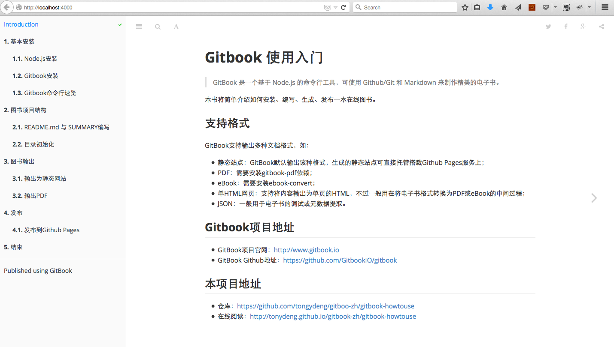

输出为静态网站
你有两种方式输出一个静态的网站：
本地预览是自动生成
当你编辑好gitbook文档之后，你可以使用gitbook的命令来进行本地预览。
$ gitbook serve ./{book_name}
gitbook会启动一个4000端口用于预览。
比如，通过gitbook serve来预览本文档：
$ gitbook serve gitbook-howtouse
Press CTRL+C to quit ...
Live reload server started on port: 35729
Starting build ...
Successfully built!
Starting server ...
Serving book on http://localhost:4000
你可以你的浏览器中打开这个网址： http://localhost:4000

你会发现，在你编辑的gitbook项目的目录中会多一个_book目录，而这个目录中就是生成的本地预览的静态网站内容。
使用gitbook build参数
与直接预览生成的静态网站不一样的时，使用这个命令，你可以将内容输出到你想要的目录。
$ gitbook build --output=/tmp/gitbook
Starting build ...
Successfuly built !
$ ls /tmp/gitbook/
howtouse search_index.json
book imgs output
gitbook index.html publish
无论哪种方式，你都可以将这个静态网站打包，发布到你想要发布的服务器上，或者直接将这个打包文件给阅读者。